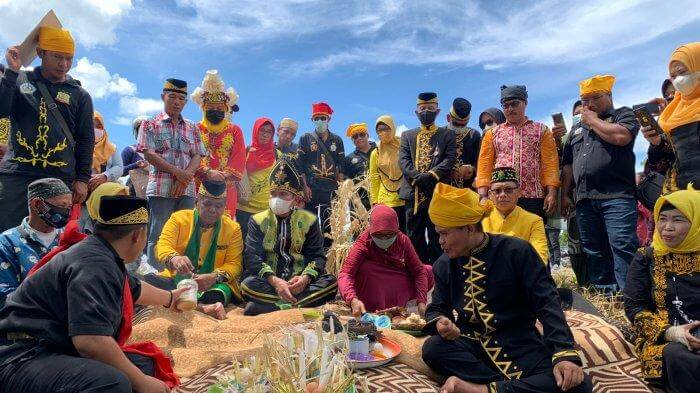
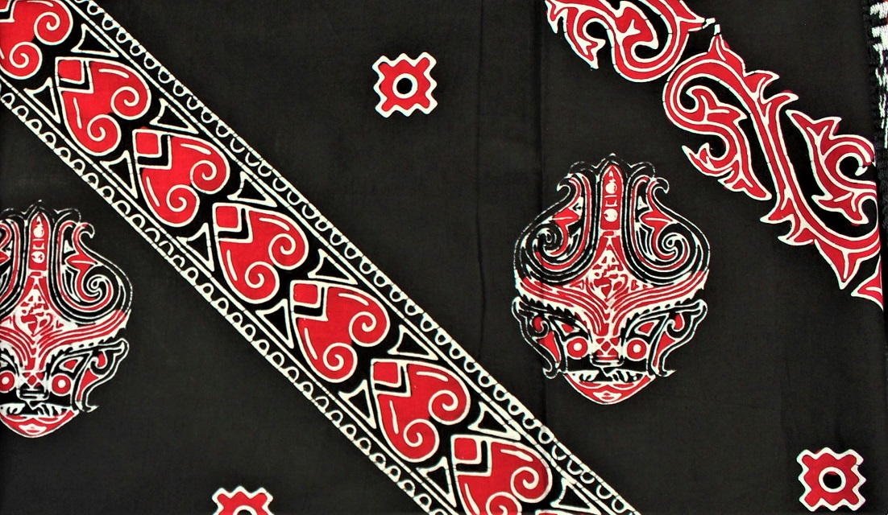

Kalimantan
Sumatera
Sulawesi
Papua

About Indonesia
Indonesia, negara kepulauan yang luas di Asia Tenggara, memiliki
permadani budaya yang kaya dan beragam yang dibentuk oleh lebih
dari 300 kelompok etnis. Lanskap budaya negara ini ditandai dengan
perpaduan yang harmonis antara tradisi, bahasa, dan adat istiadat,
dengan pengaruh utama dari Islam di samping semangat toleransi
beragama.
Kesenian tradisional seperti wayang kulit dan kerajinan batik,
serta tarian dan musik khas daerah, turut menyemarakkan warisan
budaya bangsa ini.
Upacara-upacara yang menandai peristiwa-peristiwa penting dalam
kehidupan, masakan beraroma rempah-rempah, dan rasa kebersamaan
yang mendalam melalui nilai-nilai seperti "gotong royong" semakin
mendefinisikan budaya Indonesia.
Arsitektur tradisional negara ini, yang berakar pada desain asli
dengan pengaruh dari luar, dan lanskap alamnya yang menakjubkan,
termasuk hutan hujan tropis dan pantai-pantai yang indah,
melengkapi pengaruh modern yang terlihat pada kreativitas dan
inovasi perkotaan. Memahami dan merangkul keragaman budaya ini
adalah kunci untuk menghargai kekayaan Indonesia.
Wisata Budaya di Ujung Jari Anda
Dari situs bersejarah hingga pusat seni kontemporer, kami mengundang Anda untuk membenamkan diri Anda dalam pesona budaya Indonesia. destinasi wisata Indonesia. Dengan panduan interaktif dan pengalaman virtual, setiap penjelajahan akan menjadi perjalanan yang tak terlupakan.

Bali
Bali bukan hanya tentang keindahan alamnya, pulau ini juga penuh dengan keanekaragaman budaya dan spiritualitas.
Bromo
Rasakan keajaiban alam di Gunung Bromo, salah satu destinasi paling ikonik di Indonesia.

Borobudur
kompleks candi Buddha yang megah, menjadi saksi kekayaan budaya Indonesia.
Indonesia Is A Wonderland
Indonesia adalah negeri ajaib yang tidak hanya memukau dengan keindahan alamnya, tetapi juga memancarkan keberagaman budaya dan kedalaman spiritualitas.
Berita terbaru tentang budaya Indonesia
Cari tahu lebih banyak berita tentang budaya di Indonesia.
Berita Populer Hari Ini
-

1 menit yang lalu
Desain Interior Ruang Kerja Ini Memadukan Nuansa Modern dan Budaya Indonesia
Desain interior ruang kerja ini memukau dengan harmoni sempurna antara nuansa modern dan kekayaan budaya Indonesia. Setiap elemen dirancang untuk menciptakan lingkungan yang inspiratif, memadukan elemen-elemen kontemporer dengan sentuhan tradisional yang khas. Sebuah inovasi desain yang tidak hanya mencerminkan keindahan estetika modern, tetapi juga menghormati dan memperkaya warisan budaya Indonesia dalam ruang kerja yang fungsional dan penuh gaya.
-

5 menit yang lalu
Rekomendasi kopi terbaik di Yogyakarta
Yogyakarta, kota budaya yang kaya sejarah, juga merupakan tempat bagi para pecinta kopi untuk menikmati sajian kopi yang luar biasa. Berikut adalah beberapa rekomendasi tempat kopi terbaik di Yogyakarta yang akan memanjakan lidah Anda dan memberikan pengalaman kopi yang tak terlupakan.
-

1 jam yang lalu
25+ Tempat wisata terbaru di Indonesia
Indonesia terus menggoda para pelancong dengan destinasi-destinasi wisata terbaru yang memikat hati. Dari pantai-pantai eksotis hingga hutan-hutan yang menakjubkan, berikut adalah beberapa tempat wisata terbaru di Indonesia yang patut Anda kunjungi untuk merasakan pesona keindahan alam dan budaya.
-

48 menit yang lalu
5 Rekomendasi tempat berkemah di Indonesia
"5 Tempat Berkemah yang Direkomendasikan." Lepaskan diri dari hiruk pikuk kehidupan kota saat Anda membenamkan diri dalam ketenangan di lokasi-lokasi yang memukau ini.
Latest News
12/22/2023
Desain Interior Ruang Kerja Ini Memadukan Nuansa Modern dan Budaya Indonesia
Desain interior ruang kerja ini memukau dengan harmoni sempurna antara nuansa modern dan kekayaan budaya Indonesia.
12/22/2023
5 Rekomendasi tempat berkemah di Indonesia
"5 Tempat Berkemah yang Direkomendasikan." Lepaskan diri dari hiruk pikuk kehidupan kota saat Anda membenamkan diri dalam ketenangan di lokasi-lokasi yang memukau ini.
12/22/2023
25+ Tempat wisata terabru di Indonesia
Indonesia terus menggoda para pelancong dengan destinasi-destinasi wisata terbaru yang memikat hati.
Galeri kebudayaan indonesia
Sekilas tentang Galeri Budaya Indonesia







Kontak Kami
Jangan ragu untuk menghubungi kami jika Anda memiliki pertanyaan, saran, atau ingin berkolaborasi. Kami siap membantu Anda.